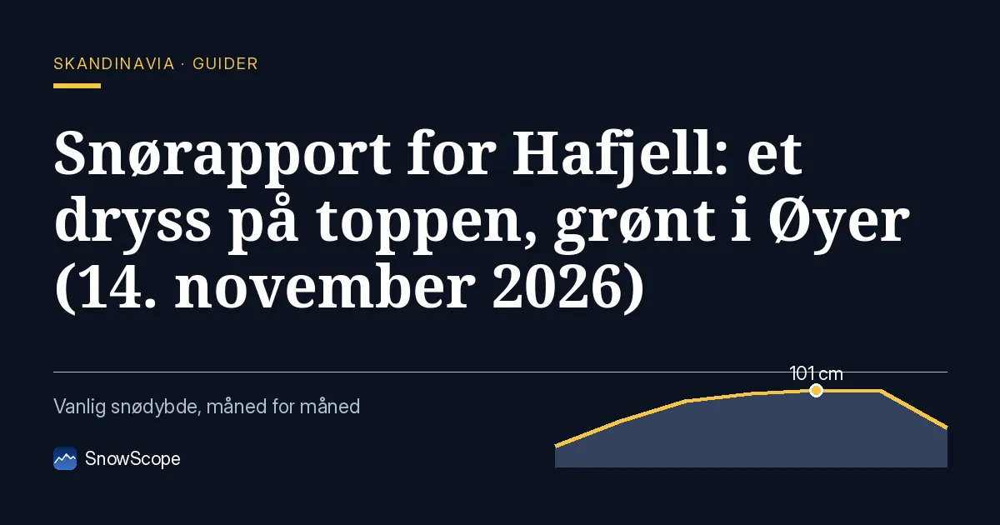

Snørapport for Hafjell: et dryss på toppen, grønt i Øyer (14. november 2026)
Hafjell ligger like nord for Lillehammer i en region som henger mellom høst og vinter. Snøkartet viser omtrent 2 cm ved toppen nær 1 058 m og ingenting nede ved foten ved Øyer. Dette er en tynt start, langt under det de siste 46 vintrene forteller oss vi kan forvente på denne datoen.
Se snøprognosen for Hafjell direkte i SnowScope-appenSnødybde, puddervarsler og 3D-kartet, gratis.

Hva tallene viser akkurat nå
14. november har midtbakkene rundt 625 m omtrent 10 til 20 cm i en typisk vinter. I dag er Hafjells estimater mye lavere: toppen har omtrent 2 cm, midbakkene rundt 10 cm ifølge prognosene, og foten er bart. Den nærmeste værstasjonenen som faktisk måler dybde, Vest-Torpa ved 542 m og 41 km sørvest for her, registrerte 12 cm 13. november, så regionen rundt omkring klarte seg litt bedre.
Forrige uke la bare små mengder til: kanskje 4 cm øverst og 1 cm ved foten, fordelt over flere lette snøbyger. Mye av det har allerede smeltet eller presset seg sammen til det tynne laget du ser nå. Dette er tidlig sesongs snø på sitt aller mest skjørt. Bare stein, lyngmark og gress skinner gjennom på bakkene unna grøftingsmaskinen.

Høyden gjør forskjellen denne uken
Værvarselet for de neste sju dagene deler fjellet i to soner. Toppen og de øvre platåene får omtrent 9 cm, mens midtbakkene rundt 625 m bør få omkring 8 cm. Foten derimot ser ut til å bli stående: omtrent ingenting er varslet å falle der, og omkring 60 prosent av nedbøren som faller i de lavere sonene vil komme som regn.
Nullgradersgrensen – grensen mellom snø og regn – vil sveve rundt 310 til 420 m. Det betyr at tilkjøringsvegene og bebyggelsen vil bli våt mens de høye bakkene blir hvite. Tidlig morgen bringer glatte partier når nattkulden møter disse våte flatene, så kjør forsiktig hvis du leter på området før åpningsdag.
Hvordan dette sammenligner med tidligere novembre
I løpet av 46 vintre holder toppen av Hafjell vanligvis 25 cm 14. november. Midbakkene har typisk 20 cm, og foten 10 cm. Akkurat nå er alle tre høydene langt under. Imidlertid er tynne starter ikke sjeldne i tidlig november. Omtrent en vinter av fire har foten null snø på denne datoen. Ved toppen holder en vinter av ti bare 2 cm eller mindre.
Mønsteret fremover er også kjent: snø konsentrerer seg i høyden mens dalen blir marginal. Mot slutten av november når toppen typisk 46 cm og midbakkene 39 cm. Mot midten av desember stiger disse tallene til 58 cm og 50 cm. Foten opparbeider seg vanligvis saktere, og når 27 cm ved slutten av november og 39 cm ved midten av desember.
Den lange hvite sesongen fremover
Hafjells høyeste punkt ligger på 1 058 m, og på den høyden ankommet snø vanligvis i midten av oktober og blir værende til tidlig juni. Vinteren blir sterkere gradvis: ved slutten av februar gjennomsnitter toppen 79 cm, og ved slutten av mars topper den omkring 106 cm. Fjelltoppen nyter omkring 217 snødager per vinter over hele sesongen.
Det kartlagte skistøet spenner 39 km løyper betjent av 17 heiser, så når snøen fyller seg inn er det plass å spre seg ut. Tidlig sesongs løyper pleier å samle seg på høyere beskyttede bakkekanter og nordvendte aspekter. Lavere grønne løyper og sørvendte terreng tar lengre tid å bygge dekning og holde den gjennom varme perioder.
Når du kan skiste her
Hafjell planlegger å åpne 27. november 2026 og stenge 11. april 2027. Den datoen avhenger av snøproduksjon for å bygge et underlag, som krever flere kalde netter. Følg skistøets egne åpningstider-side for oppdateringer, spesielt hvis varmt vær forsinker grøftingsplanen.
Hvis du brenner for å skiste nå, søk de høye platåene og ryggen bak hovedskistøet hvor naturlig snø hoppes opp mer pålitelig. Lavere bakkekanter forblir for lappete og for nær regn-grensen til å tilby konsistent kjøring. Foten av fjellet, spesielt, vil forblir bart eller slusete til desember bringer vedvarende kulde.
Tips til skiløpere
- Sikte høyt denne uken: bakkekanter over 600 m vil ha kjørbar snø ved slutten av november, mens lavere løyper vil være tynne eller bare til midten av desember.
- Vente iskalde tilkjøringsveger og stier i dalen hver morgen før solen står opp, fordi regn faller lavt og kalde netter fryser det hardt.
- Se skistøets åpningskunngjøring for den nøyaktige startdatoen. Tidlig sesongs drift avhenger av snøproduksjon, som krever flere dagers frost.
- Pakk lag for et bredt temperaturkast: foten kan være nær frysepunktet i regn, mens toppen sitter godt under null med fersk snø.
- Unngå terrengutenfor løypene under 400 m. Steiner og skogsrester ligger nær overflaten under denne tynne tidligsesongssnøen. Sjekk den offisielle snøskredvarselet fra Varsom (NVE) før du drar ut utenfor grøftede bakker hvor som helst på fjellet.
Om tallene
Snødybdene for skistedene er det dypeste snødekket i de øvre bakkene på datoen som vises; de er anslag for et område, ikke en måling i ett punkt. Prognoser kan endre seg. Les alltid det offisielle snøskredvarselet før du kjører utenfor preparert løype.
Offisielle snøskredvarsler: Varsom (NVE)
Siter denne rapporten
For forskning, undervisning eller presse: tallene og diagrammene kan brukes fritt under CC BY 4.0 med denne kildehenvisningen.
SnowScope (2026), Snørapport for Hafjell: et dryss på toppen, grønt i Øyer (14. november 2026), https://snowscope.app/blog/nb/2026/11/hafjell-snow-report-14-november-2026.html, hentet 2026-11-14
SnowScope (Atlas Labs). (2026, November 14). Snørapport for Hafjell: et dryss på toppen, grønt i Øyer (14. november 2026). SnowScope snow reports. https://snowscope.app/blog/nb/2026/11/hafjell-snow-report-14-november-2026.html
BibTeX
@misc{snowscope2026hafjellsnowreport14novem,
author = {{SnowScope (Atlas Labs)}},
title = {Snørapport for Hafjell: et dryss på toppen, grønt i Øyer (14. november 2026)},
year = {2026},
month = nov,
howpublished = {\url{https://snowscope.app/blog/nb/2026/11/hafjell-snow-report-14-november-2026.html}},
note = {Published 2026-11-14 16:19 UTC; accessed 2026-11-14}
}· CC BY 4.0 · Metoder, data og verktøy →
Hafjell: snø og temperatur etter høyde, i vinter sammenlignet med i fjor (verktøy) →
Følg Hafjell
Gratis: en melding når nysnø er på vei, og prognosen hver morgen.